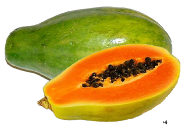

পেঁপের পরিচিতি
বাংলাদেশের এমন কোন জায়গা পাওয়া যাবে না যেখানে পেঁপে পাওয়া যায় না। পেঁপে খুবই
উপকারী একটি সবজি বা ফল আমাদের শরীরের জন্য। কাঁচা অবস্থায় পেঁপে সবজি আর পাকা
অবস্থায় ফল।
যাদের পেটে গোলমাল দেখা দেয়, তারা পেঁপে খেতে পারেন। অন্যান্য ফলের তুলনায় পেঁপেতে
ক্যারোটিন অনেক বেশি থাকে। আর ক্যালরির পরিমাণ বেশ কম থাকায় যারা মেদ সমস্যায় ভুগছেন
তারা পেঁপে খেতে পারেন অনায়াসে। এই ফলে প্রচুর পরিমাণে ভিটামিন এ ও সি আছে।

যাদের ডায়াবেটিস আছে, তাদের জন্য মিষ্টি খাওয়া হারাম। কিন্তু আমাদের দেশের অত্যন্ত
সহজলভ্য একটি ফল পেঁপে, যা মিষ্টি হলেও ডায়াবেটিস রোগীরা খেতে পারেন। চোখের সমস্যা বা
সর্দিকাশির সমস্যা থাকলে পেঁপে খেতে পারেন, কাজে দেবে। যারা হজমের সমস্যায় ভোগেন তারা
পেঁপে খেলে উপকার পাবেন। এই ফলে কোনো ক্ষতিকর উপাদান নেই। পেঁপেতে আছে পটাশিয়াম। তাই
এই ফল রক্তচাপ নিয়ন্ত্রণে রাখতে সাহায্য করে। পাশাপাশি হাইপারটেনশন কমায় অনেকখানি।
শরীরে থাকা বিভিন্ন ক্ষতিকর কোলেস্টরলের মাত্রা কমিয়ে দেয় পেঁপে।
পেঁপের পুষ্টি উপাদান
প্রতি ১০০ গ্রাম পাকা পেঁপেতে আছে- প্রোটিন ০.৬ গ্রাম, ফ্যাট ০.১ গ্রাম, মিনারেল ০.৫ গ্রাম, ফাইবার ০.৮ গ্রাম, কার্বোহাইড্রেট ৭.২ গ্রাম, খাদ্যশক্তি ৩২ কিলো ক্যালরি, ভিটামিন সি ৫৭ মিলিগ্রাম, সোডিয়াম ৬.০ মিলিগ্রাম, পটাশিয়াম ৬৯ মিলিগ্রাম, আয়রন ০.৫ মিলিগ্রাম।
রূপচর্চায় পেঁপে
বাংলাদেশের অতি সহজলভ্য একটি ফল হলো পেঁপে। প্রাচীন কাল থেকেই পেঁপে খাদ্য ও রূপ চর্চার
উপাদান হিসেবে ব্যবহৃত হয়ে আসছে। প্রাচীন মিশরের সুন্দরী সম্রাজ্ঞীরা কাচা পেঁপে
ব্যবহার করতেন ত্বকের মৃতকোষ দূর করে ত্বককে উজ্জ্বল তুলতে। যুগে যুগে রূপ সচেতন
নারীদের রূপচর্চার একটি অন্যতম উপাদান ছিলো পেঁপে। আসুন জেনে নেয়া যাক রূপ চর্চায়
পেঁপের দারুণ কিছু ব্যবহার প্রসঙ্গে।
পেঁপেতে আছে ভিটামিন এ এবং এক ধরনের প্রোটিন যা ত্বকের মৃতকোষ দূর করতে সহায়তা করে।
কাঁচা পেপে ব্লেন্ডারে ব্লেন্ড করে পুরো মুখে নিয়মিত লাগালে ব্রণের উপদ্রব কমে এবং
ব্রণের দাগ মিলিয়ে যায়।
পেঁপে বাটা পায়ের ফাটা দূর করে পাকে মসৃণ করতে সহায়তা করে।
পেঁপের খোসা মুখের ত্বকে, হাতে কিংবা পায়ে লাগিয়ে রাখুন। নিয়মিত ব্যবহারে ত্বক উজ্জ্বল
হয়ে ওঠে।
মুখের ত্বকে নিয়মিত পেঁপের রস লাগালে ত্বকে বয়সের ছাপ পড়ে না সহজে।
পেঁপে বাটা ও মধু এক সঙ্গে মিশিয়ে মুখে লাগিয়ে ১৫ মিনিট রাখুন। ত্বকের শুষ্কতা চলে যাবে
ও ত্বক কোমল হবে।
চুল শ্যাম্পু করার আগে চুলে পেঁপে বাটা বা পেপের রস লাগালে খুশকি সমস্যা থেকে মুক্তি
মেলে।
পেঁপের উপকারীতা
শরীর শুকিয়ে গেলে:
কোনো কারণ নেই অযথা শরীর শুকিয়ে যাচ্ছে, এমন অবস্থায় মুখোমুখি অনেককেই হতে দেখা যায়।
বিশেষ করে অল্পবয়সীদের ক্ষেত্রে এ উপসর্গের প্রকোপ বেশি। শরীরে অবসাদজনিত ক্লান্তি,
একটা মনমরা ভাব, পড়াশোনা বা কাজকর্মে অনীহা প্রভৃতি উপসর্গ এর সাথেই আসে। প্রায়ই এর
সাথে জড়িয়ে থাকে কোষ্ঠকাঠিন্য। এক্ষেত্রে পেঁপে খুবই ফলপ্রসূ। কাঁচা বা পাকা যে
অবস্থায়ই হোক। সকালে ও বিকেলে প্রতিদিন কয়েক টুকরো করে খেতে হবে। অন্তত এক মাস
নিয়মিত খেতে হবে।
হজমশক্তি বাড়াতে :
হজমের গোলমাল একটি ব্যাপক সমস্যা। হজমশক্তি কমে গেলে অম্বল হতে চায়, মুখে চোকা ঢেকুর
ওঠে, পেট ব্যথা শুরু হয়। কখনো চিনচিনে ব্যথা, কখনো ভয়ঙ্কর ব্যথা হয়। কখনো কোষ্ঠ
পরিষ্কার হয় না আর কখনো পেট খারাপ হয়। শরীর দুর্বল হয়ে পড়ে, শরীরে অবসাদ দেখা দেয়।
এক্ষেত্রেও পেঁপে উপকারে আসে।
উচ্চরক্তচাপ কমাতে:
চল্লিশ-পঁয়তাল্লিশ বছরের পর থেকে মানুষের রক্তচাপসংক্রান্ত সমস্যা দেখা দেয়। হয়তো
রক্তচাপ বাড়ে নয়তো কমে। রক্তচাপ বাড়লে বিভিন্ন উপসর্গ দেখা দেয়। হঠাৎ পড়ে গেলে
শরীরের কোন অংশ অকেজো হওয়ার সম্ভাবনা থাকে, শরীরে অসাড়তা দেখা যায়। উচ্চরক্তচাপ
আক্রান্তরা কাঁচা বা পাঁকা পেঁপে ব্যবহার করতে পারেন। দুটোই উপকারী। তবে খাবেন কয়েক
টুকরো এবং নিয়মিত। কয়েক মাস খেয়ে যেতে হবে।
ফাইলেরিয়া রোগ হলে:
ফাইলেরিয়া মশাবাহিত রোগ। ফাইলেরিয়ার বিভিন্ন উপসর্গ নিরাময়ে পেঁপে গাছকে ব্যবহার করা
যায়। কয়েকটি পেঁপে পাতা সংগ্রহ করে সেগুলোকে গরম পানিতে ভালো করে ফুটিয়ে নিতে হবে।
এবার পাতাগুলোকে গরম অবস্থায় সেঁকে নিয়ে নিয়মিত কয়েক দিন সেঁক দিলে ফাইলেরিয়ার
উপসর্গ অনেকটা কমে যাবে।
পেঁপের আরও কিছু পুষ্টিগুণঃ
- যেসব মায়ের সদ্য বাচ্চা হয়েছে কাঁচা পেঁপের তরকারি নিয়মিত খেলে তাদের স্তনের দুধ
বাড়বে।
- ওষুধ হিসেবে কাঁচা পেঁপের গুণ পাকা পেঁপের চেয়ে বেশি। পেপটিন বা পেঁপের আঠার গুণ
অনেক।
- প্রতিদিন দুপুরে ভাত খাওয়ার পর এবং রাতে ভাত বা রুটি খাওয়ার পর এক টুকরা কাঁচা
পেঁপে ভালো করে চিবিয়ে খেয়ে এক গ্লাস পানি খেলে সকালে পেট পরিষ্কার হয়।
- কাঁচা পেঁপে বা পেঁপে গাছের আঠা পেটের অসুখ, কোষ্ঠকাঠিন্য প্রভৃতি রোগের জন্য বিশেষ
উপকারী।
- পেঁপের তরকারি নিয়মিত খেলে পেটের পীড়া বা উদরাময়ে উপকার হয়।
- আমাশয় থেকে মুক্তি পাওয়ার অদ্ভুত শক্তি আছে কাঁচা পেঁপের আঠায়।
- ক্রিমি বিনাশের ক্ষেত্রে পেঁপে এটি ফলপ্রদ ওষুধ।